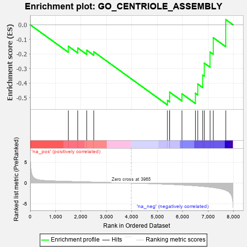
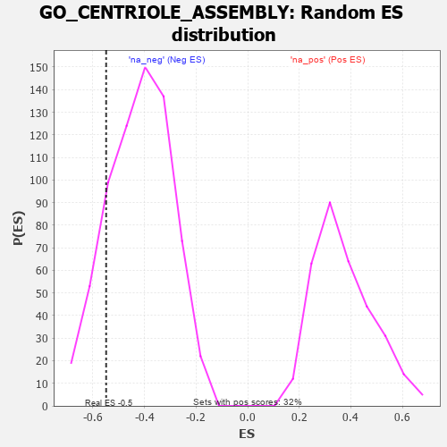

| | | Dataset | 7d |
| Phenotype | NoPhenotypeAvailable |
| Upregulated in class | na_neg |
| GeneSet | GO_CENTRIOLE_ASSEMBLY |
| Enrichment Score (ES) | -0.5487639 |
| Normalized Enrichment Score (NES) | -1.3070899 |
| Nominal p-value | 0.16691285 |
| FDR q-value | 0.46383917 |
| FWER p-Value | 1.0 |
Table: GSEA Results Summary

Fig 1: Enrichment plot: GO_CENTRIOLE_ASSEMBLY
Profile of the Running ES Score & Positions of GeneSet Members on the Rank Ordered List
| PROBE | GENE SYMBOL | GENE_TITLE | RANK IN GENE LIST | RANK METRIC SCORE | RUNNING ES | CORE ENRICHMENT | | 1 | E2F4 | | | 1501 | 0.390 | -0.1471 | No |
| 2 | NUP62 | | | 1871 | 0.324 | -0.1590 | No |
| 3 | CDK2 | | | 2226 | 0.272 | -0.1746 | No |
| 4 | KAT2B | | | 2502 | 0.226 | -0.1851 | No |
| 5 | PLK4 | | | 5397 | -0.295 | -0.5174 | Yes |
| 6 | STIL | | | 5483 | -0.314 | -0.4946 | Yes |
| 7 | CEP76 | | | 5485 | -0.315 | -0.4613 | Yes |
| 8 | CENPJ | | | 5968 | -0.460 | -0.4728 | Yes |
| 9 | RTTN | | | 6497 | -0.659 | -0.4690 | Yes |
| 10 | ALMS1 | | | 6590 | -0.704 | -0.4055 | Yes |
| 11 | C2CD3 | | | 6783 | -0.802 | -0.3442 | Yes |
| 12 | CEP72 | | | 6846 | -0.839 | -0.2626 | Yes |
| 13 | CETN1 | | | 7073 | -0.978 | -0.1868 | Yes |
| 14 | CETN2 | | | 7200 | -1.070 | -0.0888 | Yes |
| 15 | MDM1 | | | 7691 | -1.742 | 0.0352 | Yes |
Table: GSEA details [plain text format]

Fig 2: GO_CENTRIOLE_ASSEMBLY: Random ES distribution
Gene set null distribution of ES for GO_CENTRIOLE_ASSEMBLY